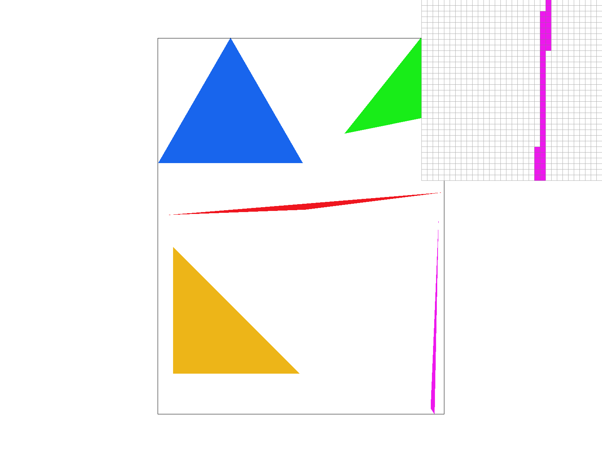
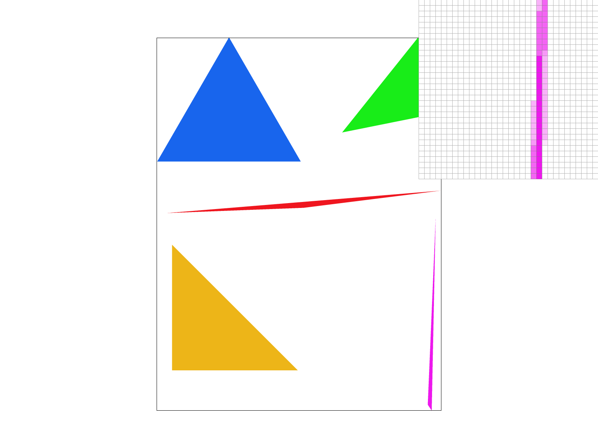
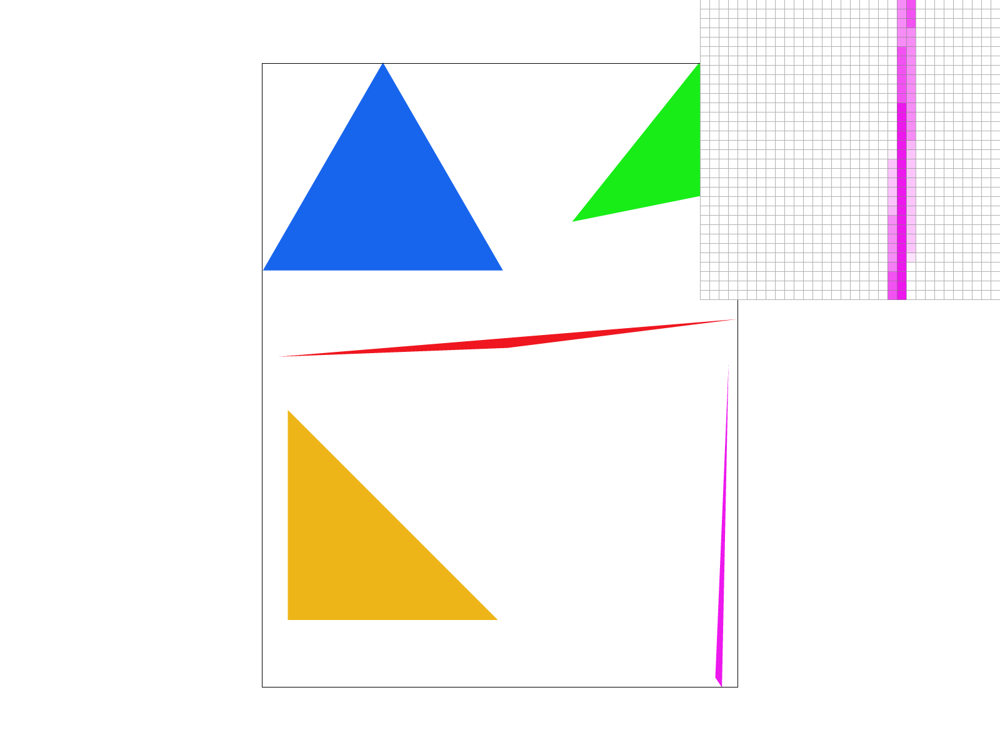
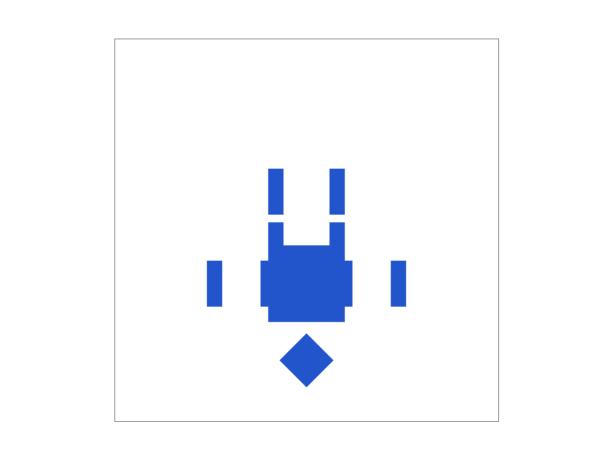
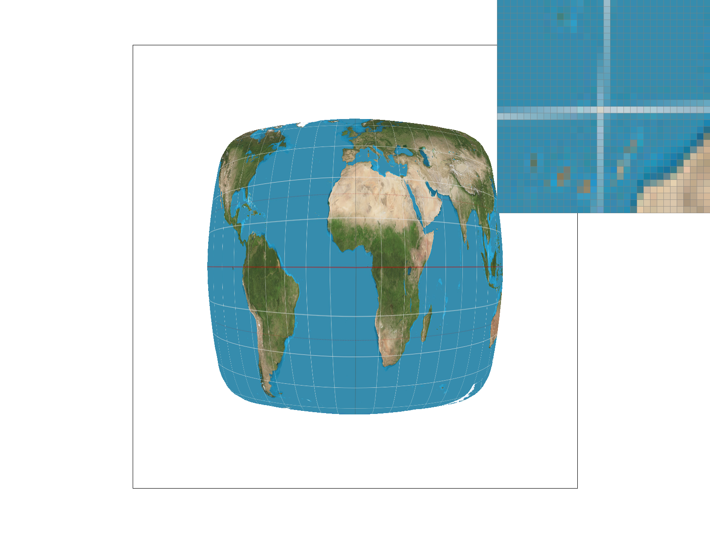
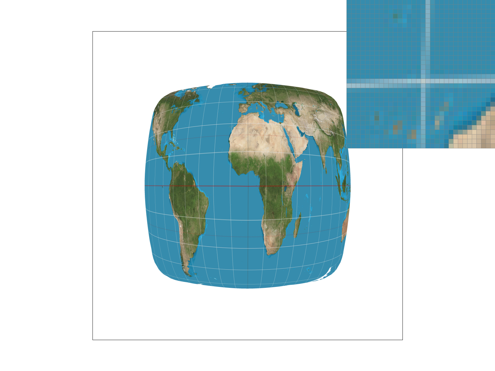

CS184/284A Spring 2025 Homework 1 Write-Up
Link to report webpage
Link to github repository
Overview
Putting this homework together and actually using all the algorithms and policies we've learnt in class gave me a much more concrete understanding of what GPUs are doing at each operation. I have been playing video games all my life but never truly understood just how many calculations were being made every second and this homework made me realize the scale of the number of operations. I was also taken aback by seeing how dramatically supersampling and bilinear filtering clean up jagged edges and blurry textures.
Task 1
Rasterizing triangles
- For every pixel whose center lands inside (or on the boundary of) the triangle, fill it with the triangle's color.
- Be careful not to waste time on pixels that cannot possibly be inside the triangle (i.e., restrict checks to the triangle's bounding box).
- Ensure the inside/outside test is robust for both clockwise and counterclockwise winding orders.
Step 1 — Computing a bounding box
Given the three triangle vertices \((x_0,y_0), (x_1,y_1), (x_2,y_2)\), we can compute the smallest axis-aligned bounding box that contains them:
min_x = floor( min(x0, x1, x2) ) max_x = ceil( max(x0, x1, x2) ) min_y = floor( min(y0, y1, y2) ) max_y = ceil( max(y0, y1, y2) )
These bounds are clamped to stay within [0, width-1] and [0, height-1] to avoid out-of-bounds errors.
Step 2 — Inside-triangle test
For each pixel in the bounding box, I test whether its center \((x+0.5, y+0.5)\) is inside the triangle using the signed edge function:
\[ E(A, B, P) = (B_x - A_x)(P_y - A_y) - (B_y - A_y)(P_x - A_x) \]A point is inside if all three edge functions (one per triangle edge) are the same sign or zero.
Step 3 — Handling winding order
The order of the vertices might be clockwise or counter-clockwise, so I check the triangle area sign. If it’s positive, the edge values should all be ≥ 0; if negative, all should be ≤ 0. This includes points exactly on the edge.
Step 4 — Filling the pixel
If the point is inside, I call fill_pixel(x, y, color) just like in the point rasterization example.
This method visits each pixel within the bounding box once, and does an \(O(1)\) test per pixel, so it is as efficient as a basic bounding box check and does not do any extra work.
basic/test4.svg
basic/test4.svg — default view
Extra Credit:
For extra credit, I sped up triangle rasterization by avoiding redundant work in the inner loop. Using the linearity of the edge function, I precompute its constant increments and update edge values via addition as I traverse pixels, eliminating multiplications. I also normalize triangle winding in advance, so each pixel can use a single inside-test branch. Buffer writes were streamlined by incrementing direct pointers instead of recalculating indices, and bounding box checks skip out-of-bounds triangles early.
I performed benchmarks by rendering 10 triangles across 2,000 iterations. These optimizations approximately doubled the performance at -O0 optimization level, and provided a smaller but measurable improvement at -O3. See the table below for detailed results. (-O0: naive 27.6ms, optimized 11.1ms; -O3: naive 2.47ms, optimized 2.22ms.)
| Build flags | Naive (ms / pass) | Optimized (ms / pass) | Speedup |
|---|---|---|---|
-O0 (Debug) |
27.59 | 11.09 | 2.49× |
-O3 (Release) |
2.47 | 2.22 | 1.11× |
Task 2
Algorithm and data structures
The key data structure is sample_buffer, a
std::vector<Color> of size
width × height × sample_rate.
Each pixel (x, y) owns a contiguous block of
sample_rate Color entries starting at index
(y · width + x) · sample_rate.
Within that block, slot i holds the colour recorded at the
i-th within-pixel sample location.
The within-pixel sample positions are precomputed once into
sample_offsets, a vector of r fractional
(dx, dy) pairs in [0,1)2.
For the default grid pattern with
s = √r subdivisions per side, the offsets are
the regular centres
( (i + 0.5)/s , (j + 0.5)/s ).
Changing sample_rate or the sampling pattern
rebuilds these offsets and resizes the buffer automatically.
Pipeline modifications
-
set_sample_rate/set_framebuffer_target— both resizesample_buffertowidth × height × sample_rateand callrebuild_sample_offsets(). -
rasterize_triangle— iterates over every pixel in the bounding box. For each pixel it loops over all r precomputed offsets, evaluates the three edge functions at (px+dx, py+dy) using incremental arithmetic (no per-sample multiplications), and writes the triangle colour intosample_buffer[pixel_base + i]if the sample is inside. -
fill_pixel— used by points and lines, writes the same colour into all r slots of the target pixel so they render at full intensity regardless of sample rate. -
resolve_to_framebuffer— for each output pixel sums all r Color slots, divides by r, rounds to 8-bit, and writes torgb_framebuffer_target. This is the only place the sample buffer touches the display.
Why supersampling antialiases triangles
With a single sample at the pixel centre the rasterizer makes a binary inside/outside decision for every pixel. Pixels that straddle a triangle edge are either fully coloured or fully white — no intermediate value is possible. This binary snap is the root cause of the staircase (jagged) aliasing visible on diagonal and thin edges.
Supersampling approximates the true fractional area of a pixel that lies inside the triangle by averaging r binary inside/outside tests spread across the pixel. A pixel that is 3/4 inside receives three passing samples and resolves to 75% of the triangle colour — a soft grey-to-colour gradient instead of a hard step. The more samples we use, the finer the coverage estimate and the smoother the edge.
test4.svg — sample rate 1 |
test4.svg — sample rate 4 |
test4.svg — sample rate 9 |
test4.svg — sample rate 16 |
Why these results occur: At rate 1 the single pixel-centre sample either lands inside or outside the triangle — no middle ground. At the very tip of a thin triangle the pixel centres straddle the edge and often miss it entirely, producing isolated white gaps. At rate 4 we take a 2×2 grid of samples per pixel; pixels near the tip now have 1, 2, or 3 passing samples, resolving to 25%, 50%, or 75% of the triangle colour — a visible gradient that fills in the missing tip. Rate 9 (3×3) and rate 16 (4×4) provide still finer coverage estimates with more possible intermediate shades, pushing the edge gradient closer and closer to the continuous ideal.
Extra Credit: Jittered and Halton Low-Discrepancy Sampling
I implemented both the additional within-pixel sampling patterns beyond the regular grid. Press N at runtime to cycle Grid → Jittered → Halton → Grid; the active pattern is shown in the window title and the terminal log.
The three patterns
- Grid (default) — regular \(\sqrt{r} \times \sqrt{r}\) grid, centres at \(\bigl(\frac{i+0.5}{s},\;\frac{j+0.5}{s}\bigr)\). Predictable and fast, but its periodicity can resonate with periodic scene features and create structured Moiré aliasing.
- Jittered (stratified) — the pixel is still divided into \(s \times s\) strata, but each sample is randomly displaced within its own cell: \(\bigl(\frac{i+\xi_x}{s},\;\frac{j+\xi_y}{s}\bigr)\) with \(\xi \in [0,1)^2\) drawn from a fixed seed. Stratification preserves uniform coverage on average while the random offset breaks periodicity.
- Halton low-discrepancy sequence — sample \(i\) is placed at \(\bigl(H_2(i),\;H_3(i)\bigr)\) where \(H_b\) is the radical-inverse in base \(b\): \[H_b(i) = \sum_k d_k\, b^{-(k+1)},\quad i = \sum_k d_k b^k\] Base-2 and base-3 sequences are mutually incommensurate, giving very low discrepancy — the joint sequence fills the unit square more uniformly than either random or grid sampling. It has zero periodicity, so it cannot resonate with scene content.
All three modes share the same buffer layout
sample_buffer[(y·W+x)·r + i]
and the same resolve_to_framebuffer averaging pass.
In rasterize_triangle the incremental edge values are seeded
at the pixel corner; each sample adds
ox·(dE/dx) + oy·(dE/dy) — an exact evaluation
at any fractional offset with no extra multiplications.
Aliasing test scene — svg/basic/aliasing_test.svg
I asked Claude to generate an SVG with relatively small separations and follow the said specs such that a Moiré false contour occurs even at rate 16. Jittered sampling softens this because the per-cell random offset breaks the integer row alignment. Halton eliminates it entirely because its aperiodic sequence always straddles the boundary and correctly measures partial coverage.
Task 3
Implementation
- translate(dx, dy): moves points by (dx, dy) \[\begin{pmatrix}1&0&dx\\0&1&dy\\0&0&1\end{pmatrix}\]
- scale(sx, sy): scales along x and y \[\begin{pmatrix}sx&0&0\\0&sy&0\\0&0&1\end{pmatrix}\]
- rotate(deg): rotates by angle (degrees, CCW-positive) \[\begin{pmatrix}\cos\theta&-\sin\theta&0\\\sin\theta&\cos\theta&0\\0&0&1\end{pmatrix}\]
My Robot: Cubeman Waving
I posed the robot so the right arm is raised and curled (wave), the left arm hangs gently, and the legs stride forward/back. Each limb is rotated at its joint (shoulder/hip/elbow/knee), keeping all segments connected. Briefly:
- Right arm: Rotated −110° at the shoulder, plus −30° at the elbow for curling the wave.
- Left arm: Rotated +20° at the shoulder, bent +20° at the elbow.
- Left leg: Rotated −20° at the hip, bent +25° at the knee (stepping forward).
- Right leg: Rotated +15° at the hip, bent −10° at the knee (stepping back).
Rotations are applied hierarchically so joints always stay attached.
my_robot.svg.
Extra Credit: Viewport Rotation with [ / ]
Pressing ] rotates the viewport 15° clockwise; [ rotates 15° counter-clockwise. Space resets pan, zoom, and rotation.
Viewport rotation is implemented by multiplying an additional rotation matrix (about the NDC centre) between the svg_to_ndc and ndc_to_screen transforms:
T = ndc_to_screen · R_ndc · svg_to_ndc
Where R_ndc = translate(0.5, 0.5) · rotate(−θ) · translate(−0.5, −0.5). This is done once per frame; no changes are needed to the SVG or rasterizer code.
-
Code changes: new
view_rotationfield, addedfull_transform()to build the combined transform, updated event handling and drawing logic to use these.

my_robot.svg.
For fun, I (tried to) make a second version of cubeman doing a headstand, saved as

svg/transforms/handstand_robot.svg.
Task 4
Barycentric coordinates are a way of expressing any point inside a triangle as a weighted combination of the triangle's three vertices. For a triangle with vertices A, B, and C, any interior point P can be written as:
P = α A + β B + γ C, where α + β + γ = 1 and α, β, γ ≥ 0.
Intuitively, each weight (α, β, γ) tells you how "close" the point is to the corresponding vertex — or equivalently, the weight for a vertex equals the fraction of the total triangle area occupied by the sub-triangle formed by P and the two opposite vertices. A point sitting exactly on vertex A has (α, β, γ) = (1, 0, 0); the centroid has (1/3, 1/3, 1/3).
C(P) = α CA + β CB + γ CC.
basic/test7.svg — color wheel rendered at default view, sample rate 1.Task 5
Pixel sampling is the process of determining what color to assign to a screen pixel when that pixel maps onto a texture image. Because the screen pixel and the texture are at different resolutions and orientations, the pixel's center rarely lands exactly on a texel center — we need a rule for reconstructing a color from the discrete texel grid.
Implementation. In rasterize_textured_triangle, for each sample inside the triangle I compute its barycentric
coordinates (α, β, γ) and use them to interpolate the per-vertex uv coordinates:
(u, v) = α (u0,v0) + β (u1,v1) + γ (u2,v2)
This (u, v) pair in [0,1]² is then passed to tex.sample(), which dispatches to either
sample_nearest or sample_bilinear depending on the psm flag.
Nearest-neighbor sampling simply rounds the continuous texel coordinate (u × W, v × H) to the nearest integer and returns that single texel's color. It is fast but can produce a blocky or aliased look when the texture is magnified or when fine detail is viewed at an angle, because adjacent screen pixels can suddenly snap to different texels.
Bilinear sampling locates the four texels that surround the continuous sample point and blends them with weights proportional to how close the point is to each corner (a weighted average in both x and y). Concretely, for a sample that falls at fractional position (s, t) within a 2×2 texel quad:
color = lerp(lerp(c00, c10, s), lerp(c01, c11, s), t)
This smooths out the discontinuous jumps between texels and produces noticeably softer, more accurate results at sample rate 1, though at a small cost in computation (4 texel fetches instead of 1).
When does the difference matter most? The gap between the two methods is largest when a single screen pixel maps to a region that straddles a texel boundary — i.e., when the texture is magnified (each screen pixel covers less than one texel) but the sample rate is low. Under nearest sampling, pixels right on a boundary snap to one side and produce harsh color steps or missing thin features (e.g., a latitude/longitude grid line may disappear entirely). Bilinear interpolation smooths the transition and keeps those thin features visible. When the sample rate is already high (e.g., 16 spp), supersampling effectively provides its own sub-pixel blending, so the two methods look more similar. Similarly, when the texture is heavily minified (one pixel covers many texels), both methods look aliased.
|
|
 |
|
|
 |
Task 6
Level sampling (mipmapping) addresses the aliasing that occurs when a screen pixel covers a large area of the texture (minification). Instead of sampling the full-resolution image and getting noisy, aliased results, we pre-compute a sequence of progressively downsampled copies of the texture (the mipmap). For each screen pixel we choose (or blend between) the mipmap level whose resolution roughly matches the footprint of that pixel in texture space, giving a much cleaner result.
Implementation. The key quantity is the texture-space footprint of one screen pixel.
For a sample at (x, y) inside the triangle, I compute barycentric coordinates for three points ((x,y),
(x+1, y), and (x, y+1))and interpolate their uv coordinates to get
p_uv, p_dx_uv, and p_dy_uv.
Inside Texture::get_level I form the difference vectors
d_dx = p_dx_uv - p_uv, d_dy = p_dy_uv - p_uv
scale each by the full-resolution texture dimensions (W, H) to convert from uv to texel space, and compute
L = max(||(du/dx, dv/dx)||, ||(du/dy, dv/dy)||) level = log2(L)
This gives the continuous mipmap level. The three modes then use it as follows:
- L_ZERO: always sample mipmap level 0 (full resolution). Fast and uses no extra memory beyond the base texture, but aliases heavily under minification.
- L_NEAREST: round the continuous level to the nearest integer and sample that single mipmap. Greatly reduces minification aliasing at almost no extra per-sample cost; adds ~33% memory overhead for the full mipmap pyramid.
- L_LINEAR (trilinear when combined with P_LINEAR): interpolate between the two adjacent integer levels with weight
t = level - floor(level). Eliminates the visible "band" discontinuities between mipmap levels, at the cost of two texture samples per fragment instead of one.
The texture used below is img/map.png — a 2058×1036 world map — rendered full-screen via
svg/texmap/mytest.svg. It is an ideal test case because its latitude/longitude grid lines are
thin, high-frequency detail that aliases severely without mipmapping, and they are spread uniformly across
the image so minification effects are easy to spot. The screenshots below use sample rate 1.
Tradeoff summary across all three sampling dimensions:
In practice: level sampling gives the best antialiasing-per-cost ratio for minification (one precomputed mipmap solves the problem cheaply). Bilinear pixel sampling is cheap and worth always enabling for magnification. Supersampling is the most general but also the most expensive — best reserved for geometric edge quality, not texture minification.
.png)
|
|
.png)
|
.png)
|
Task 6 Extra Credit
Motivation
Standard mipmapping chooses one isotropic (square) mip level based on the longer axis of the pixel footprint. When a surface is viewed at a steep angle, the footprint in texture space is a long, thin ellipse — e.g. 32 texels wide but only 2 texels tall. Isotropic mipmapping would pick level log2(32) = 5, which is blurred 32× in both directions. This causes the texture to look blurry along the "short" axis even though there is plenty of resolution available.
Anisotropic filtering fixes this: it chooses the mip level based on the shorter axis only, then takes multiple samples spread along the longer axis to correctly average the texture in that direction. This keeps sharpness along the minor axis while still filtering correctly along the major axis.
Algorithm
-
Compute the two footprint vectors in texel space from the uv derivatives already available in
SampleParams:(du/dx, dv/dx) and (du/dy, dv/dy), each scaled by (width, height)
- Find the major axis (longer footprint vector) and the minor axis (shorter one).
-
Choose the mip level from
log2(minor_len)instead oflog2(major_len). This avoids over-blurring in the minor direction. -
Compute the anisotropy ratio = major_len / minor_len, capped at
MAX_ANISO = 8taps. -
Take
n_tapsbilinear samples evenly spaced along the major axis, centered onp_uv, and average them. Each tap uses trilinear interpolation between the two adjacent mip levels at the chosen fine level.
Performance
Each call to Texture::sample() records the elapsed CPU time with
clock() into per-method accumulators
(Texture::sample_time[4], Texture::sample_count[4]).
Pressing T in the GUI to prints a timing report to stdout. Representative results
on the world-map SVG at default zoom (sample rate 1):
Anisotropic filtering is 10–20× more expensive than the simplest method, but the visual quality gain on oblique surfaces is dramatic — and it is still far cheaper than raising the supersample rate to achieve equivalent quality.
Visual Comparisons
All screenshots below use svg/texmap/mytest.svg (world map, 800×400 viewport),
sample rate 1. The pixel inspector is placed on the equatorial grid lines (a region where the
texture footprint is nearly isotropic).
.png)
|
.png)
|
.png)
|
.png)
|
Task 7: Galactic Spiral
The submission is docs/competition.svg — a procedurally generated face-on barred spiral galaxy
rendered entirely from colortri elements, with no paths, gradients, or raster images.
docs/competition.svg rendered with the draw binary
at sample rate 1 (default). The image should show a deep-space spiral galaxy:
near-black background with scattered white/blue/orange star points; a large dark-violet
halo disk fading toward a glowing amber core; two logarithmic spiral arms sweeping
outward from the nucleus — bright gold at the root transitioning through crimson-orange
to deep violet at the tips; bright knots of blue-white star clusters dotting the arms;
a tilted central bar of warm white/gold crossing the nucleus; and a brilliant white/yellow
point-source core burst at the very centre.
colortri elements, 800×800.How it works
The scene is generated by src/gen_competition.py (run with python3 src/gen_competition.py,
which writes docs/competition.svg). It builds the scene in seven layers, drawn back-to-front
using the painter's algorithm:
- Background. Two triangles fill the 800×800 canvas with a near-black (R=0, G=0, B=0.02) colour.
- Outer halo / disk. Six concentric rings of 120-segment triangle fans, each ring interpolating from deep indigo at the rim through dark violet toward an amber inner edge. The ring radii are spaced with a 1.5-power curve so the inner rings are denser.
-
Spiral arms. Two logarithmic spiral arms offset 180° apart, each parameterised as
r = r₀ · ek θwithk = 0.22. Each arm is tessellated into 240 thin ribbon quads (two triangles each). The quad width grows from 18 px at the nucleus to 55 px at the tip. Vertex colours sweep from bright gold at the root through crimson-orange to deep violet at the tip. A brighter spine ridge is layered on top of the inner half of each arm. - Central bar. A 60-segment ribbon of warm-white/gold triangles crossing the nucleus at 25°, tapering in width toward the ends.
- Star clusters. 18 HII-region knots of 35 tiny random triangles each, placed at random points along the two arm spines with a Gaussian spatial spread. Colours are blue-white with random brightness to simulate hot young stars.
- Core burst. Three concentric triangle fans (180 segments each) building up from a pure-white inner disk through warm yellow to amber, simulating the central AGN glow.
- Star field. ~1,400 tiny equilateral triangles at random positions across the canvas (avoiding the bright core), with random size (0.4–2.5 px), colour (white/blue/orange/yellow), and brightness — giving the illusion of distant stars.
docs/competition.svg — Procedural Spiral Galaxy ("Competition" render)
The entire scene uses only barycentric colour interpolation with no texture maps, no gradients, no paths. The logarithmic spiral arms and concentric halo rings are the most computation-intensive parts of the generator, but the script completes in under a second and produces a single self-contained SVG file.